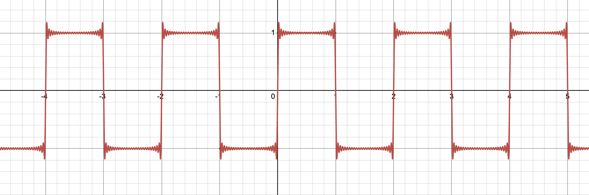

In practice, it is not possible to use infinitely many terms of a Fourier series. For example, a device that processes a periodic signal may compute its Fourier series, modify the sinusoidal components, and then reconstruct the signal. Such a device can only use a finite number of terms.
When the signal has a jump discontinuity, an important effect called Gibbs phenomenon occurs. Near the discontinuity, the partial sums of the Fourier series exhibit oscillations that produce an overshoot. This overshoot does not disappear as more terms are added; instead, it approaches approximately \(9\%\) of the size of the jump.
Example
Let \( f(x) \) be the \(2\pi\)-periodic function defined by
Its Fourier series is given by

The partial sums \(S_N(x)\) of this series approximate \( f(x) \). Note that as \(x\) approaches a discontinuity of \( f(x) \) from either side, the value of \(S_N(x)\) tends to overshoot the limiting value of \( f(x) \)— either 1 or −1 in this case. This behavior of a Fourier series near a point of discontinuity of its function is typical and is known as Gibbs phenomenon.
Interactive Tool
Note: This is part of Section 9.1-9.2.